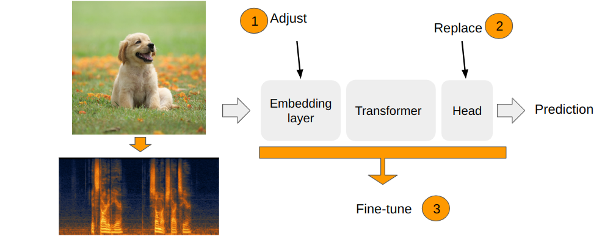
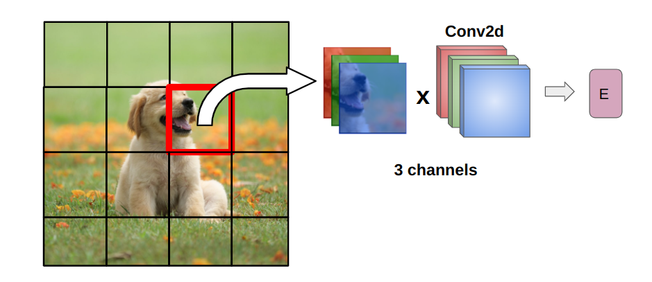
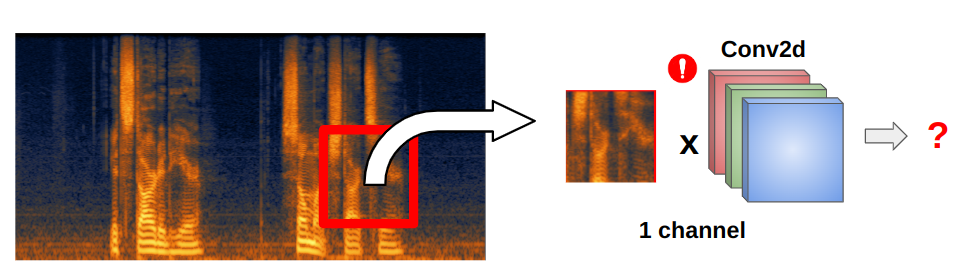
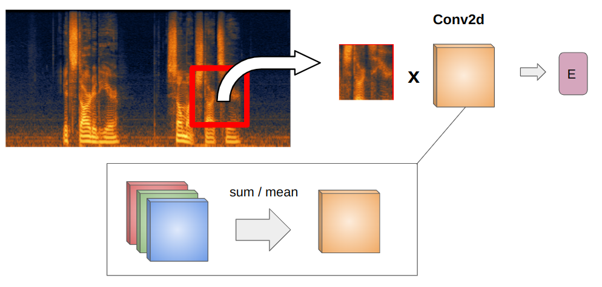
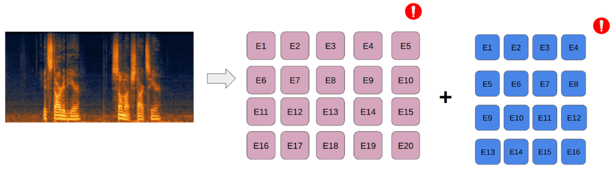
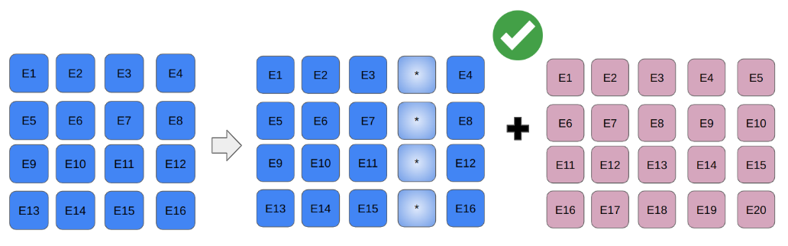
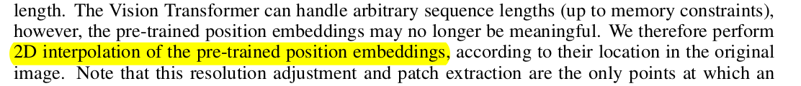
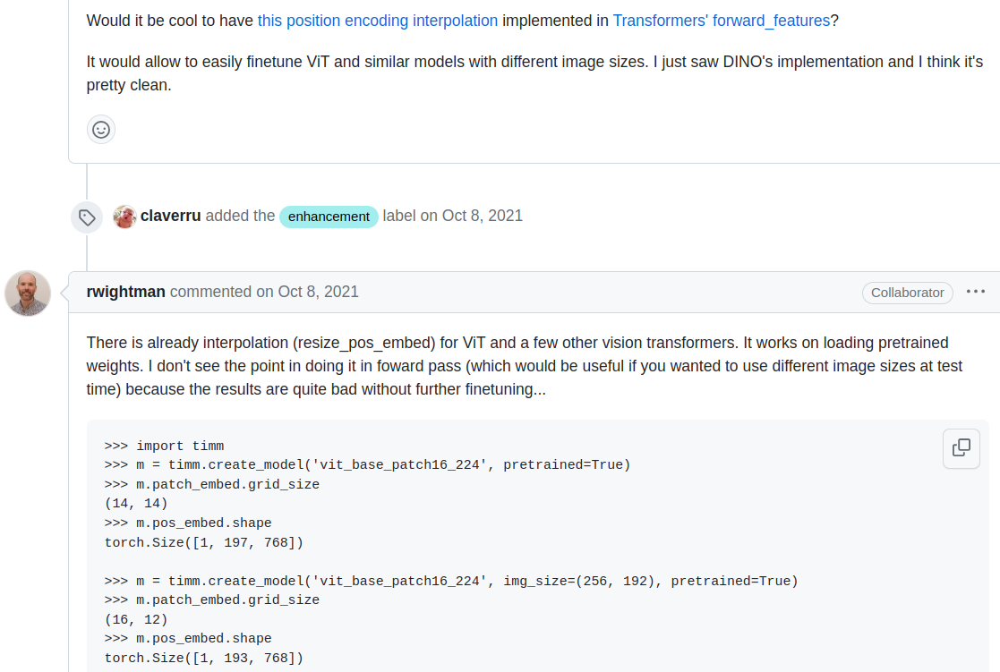
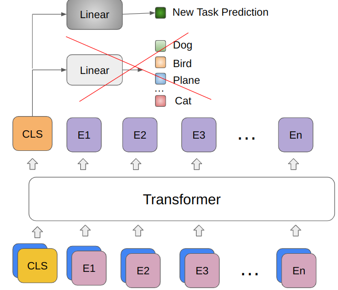

self.proj = nn.Conv2d(in_chans, embed_dim, kernel_size=patch_size, stride=patch_size, bias=bias)Applying vision models to audio data
Fine-tuning ViTs and ConvNets on spectrogram data

Several research have demonstrated that vision models pretrained on large datasets of images can be successfully aplied for audio classifiaction tasks. Both vision transformers and convolutional neural networs. 
Vision transformers
The are 3 main modules in the vision transformer which are important for transfer learning:
- The embedding module. Transfomrs images to a sequence of vector embeddings
- Transformer encoder module. Containes stacked transformer encoder layers.
- Head. Computes the final prediction from the obtained representation vector.

Adjusting the embedding layer
Embedding layer processing:
- Split an image into patches
- Compute patch embeddings
- Add position encoding

Computing patch embeddings
To compute an embedding from a patch, vision transformer applies a convolution operation with 3 input channels and the number of output channels equal to the specified embedding dimension.

Here’s how it is done in the timm library, from the timm.layers.PatchEmbed class:
When we work with spectrograms we have only 1 channel of information and that’s why embeddings layer has to be adjusted.

The adjustment can be done by copying spectrogram channel 2 times, averaging or taking a sum of the input channels of the embedding layer.

Timm library sums the weights of the convolution channels. From the adapt_input_conv function in the timm.models._manipulate:
conv_weight = conv_weight.sum(dim=1, keepdim=True)The same is happening in the Audio Spectrogram Transformer:
new_proj.weight = torch.nn.Parameter(torch.sum(self.v.patch_embed.proj.weight, dim=1).unsqueeze(1))Adjusting position embeddings
Position embeddings added to encode spatial information about the location of each patch in the image. Visual transformer models are pretrained on a fixed size images, which means they learn positional embeddings of a fixed size as well. To apply it to a different size images or spectrograms, position embeddings need to be somehow adjusted to transfer the learned relationships to different resolutions.

A popular solution - 2D interpolation.

From the original ViT paper, ‘Fine-tuning and higher resolution’ section:

Timm library also implements interpolation. From the github issue discussion:

From the timm.layers._pos_embed.resample_abs_pos_embed:
posemb = F.interpolate(posemb, size=new_size, mode=interpolation, antialias=antialias)Replacing the head
The final adjustment is simply changing the final layer for the specific task. The head layer in ViT consumes CLS token. So the new head should have the input dimention equal to the CLS token dimention (or just embeddings dimention).

* DeiT models have 2 CLS tokens, so there are 2 heads to adjust.
Example
Here’s how we can get a pretrained ViT model with adjusted embedding layer and the head layer for further fine-tunung:
m = timm.create_model('vit_base_patch16_224', img_size=size, pretrained=True, in_chans=1, num_classes=num_classes)CNNs
For CNNs the process is mostly the same except they can work with variable size inputs, so we only need to adjust the number of input channels and the head. When we choose in_chans = 1 in timm library, under the hood adapt_input_conv function is called to adjust input layer as it was shown earlier:
conv_weight = conv_weight.sum(dim=1, keepdim=True)
m = timm.create_model('convnext_tiny', pretrained=True, in_chans=1, num_classes=num_classes)